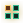
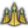

Simulador de Planetas
Primera versión: elige edificios para tu colonia y comprueba los empleos y recursos que aportan, respetando el límite real de ranuras de edificios del juego.
—
—
Biblioteca
Planetas guardados
 Imperios guardados
Imperios guardados
Tamaño del planeta

Distritos 0 / 20Ranuras de edificios
Edificio capital
Producción total de recursos
Producidos
Consumidos
Netos
Comparación de escenarios A/B
 Reservas mes a mes
Reservas mes a mes
 Condiciones del planeta
Condiciones del planeta
Modificadores activos
Resumen de empleos totales
Perfil de imperio
 Éticas
Éticas

Autoridades